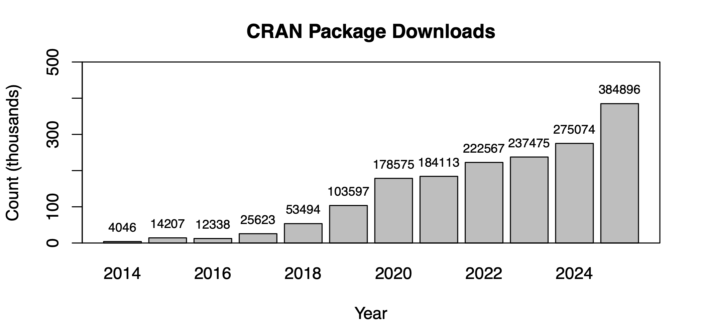

Software Development
Software Impact

Big and High-Dimensional Data
- Helwig NE (2026). grpnet: Group Elastic Net Regularized GLMs and GAMs. DOI: 10.32614/CRAN.package.grpnet
- Helwig NE (2018). bigsplines: Smoothing Splines for Large Samples. DOI: 10.32614/CRAN.package.bigsplines
Nonparametric Regression and Inference
- Helwig NE (2026). npreg: Nonparametric Regression via Smoothing Splines. DOI: 10.32614/CRAN.package.npreg
- Helwig NE (2026). nptest: Nonparametric Bootstrap and Permutation Tests. DOI: 10.32614/CRAN.package.nptest
- Helwig NE (2025). gammi: Generalized Additive Mixed Model Interface. DOI: 10.32614/CRAN.package.gammi
Multivariate and Tensor Analysis
- Delgado JE, Elison JT, & Helwig NE (2025). mvout: Robust Multivariate Outlier Detection. DOI: 10.32614/CRAN.package.mvout
- Helwig NE (2025). multiway: Component Models for Multi-Way Data. DOI: 10.32614/CRAN.package.multiway
- Helwig NE (2022). ica: Independent Component Analysis. DOI: 10.32614/CRAN.package.ica
Constrained Multivariate Optimization
- Helwig NE (2025). CMLS: Constrained Multivariate Least Squares. DOI: 10.32614/CRAN.package.CMLS
- Helwig NE (2018). Dykstra: Quadratic Programming using Cyclic Projections. DOI: 10.32614/CRAN.package.Dykstra
Electroencephalography (EEG) Toolkit
- Helwig NE (2025). eegkit: Toolkit for Electroencephalography Data. DOI: 10.32614/CRAN.package.eegkit
- Helwig NE (2022). eegkitdata: Electroencephalography Toolkit Datasets. DOI: 10.32614/CRAN.package.eegkitdata